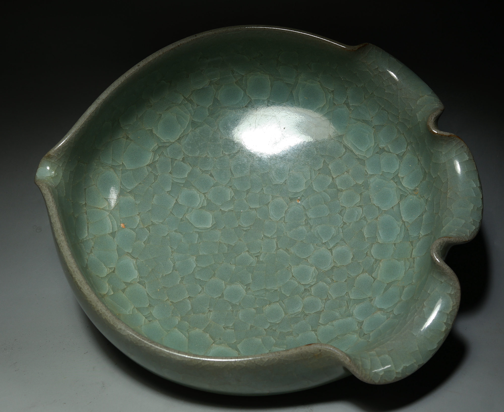

Song Dynasty Minimalism

Context: Long before "Minimalism" became a Western design movement, Song Dynasty ceramics (like Ru Ware) perfected the aesthetic of "less is more."
Contextualizing Porcelain History within the Design Canon
Context: Long before "Minimalism" became a Western design movement, Song Dynasty ceramics (like Ru Ware) perfected the aesthetic of "less is more."

The shift to mass production. In class, we discussed how this changed the role of the craftsman and introduced standardization.

While the Song dynasty relied on individual masters, Wedgwood applied Industrial Revolution principles to pottery: division of labor and molds, making high-quality design accessible to the middle class.

A reaction against industrialization. William Morris argued for a return to hand-craftsmanship and truth to materials.

During the Republican era in China (overlapping with Western Art Deco), my great-grandmother collected "New Pastel" (Qianjiang) porcelain. Unlike the imperial kilns, these were painted by individual literati artists, mirroring the Western Arts & Crafts ideal of individual expression.
"Form follows function." The school sought to unite art and technology. We studied the geometric shapes and lack of ornamentation.

The founder of Bauhaus, Walter Gropius, designed this tea set for Rosenthal. It is the perfect example of Bauhaus principles applied to porcelain: geometric, functional, and devoid of the floral patterns seen in the 19th century.

This is the porcelain I use every day. It carries the DNA of design history: its material comes from ancient clay discoveries, its mass production method comes from the Industrial Revolution, and its ergonomic handle reflects modern functionalism.